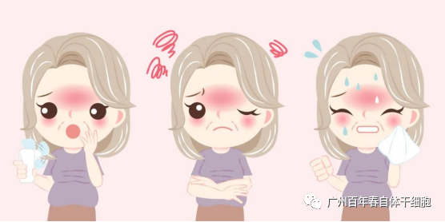
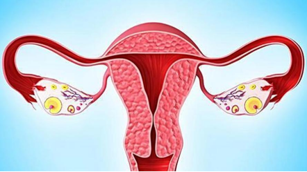
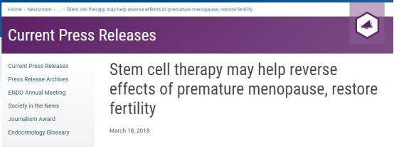

年后肝"负重"？百年春护肝美颜能量抗衰老针——给肝"松绑"，让脸发光！
2026-03-01

About Us
关于百年春

01 —
更 年 期
更年期一词大家都不陌生，也坚信自己身边的女性，人生当中都会经历这一个阶段，同时也坚信更年期扛一扛，很快就会自愈，事实却并非如此。 首先是月经改变，表现为经期缩短、经量减少、绝经。 其次为血管舒缩症状，表现为潮热、出汗、畏寒怕冷、失眠、心悸、头痛。 还可出现精神神经症状，表现为易怒、焦虑、多疑、抑郁、自信心降低、情绪失控、记忆力减退、睡眠障碍等。 同时还伴随着泌尿生殖系统的萎缩改变、骨量下降、肌肉酸痛、性功能下降等等。 临床上的治疗办法通常为心理疏导、雌激素、孕激素等药物进行治疗。 大家都知道激素治疗会增加患者患乳腺癌的风险，以及血栓及胆结石的风险。 一种更科学有效安全的治疗手段已慢慢映入大众视野。  02 — 突 破 ！自 体 干 细 胞 疗 法 有 望 逆 转 更 年 期 ！

“两名已经完成治疗的参与者的血清雌激素水平在注射自体干细胞后3个月就开始增加，效应至少已经维持了一年。她们的更年期症状已经被完全消除，而在将自体干细胞注射到卵巢后6个月，她们的月经周期就恢复了。”该研究通讯作者、伊利诺伊大学转化医学主任和妇科医学教授Ayman Al-Hendy博士说道。